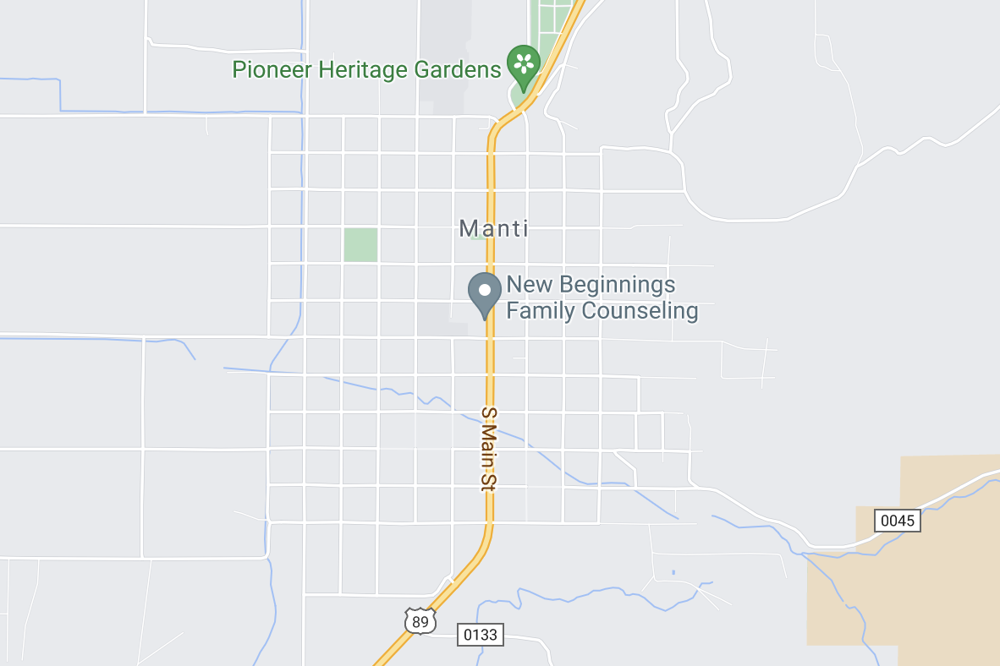
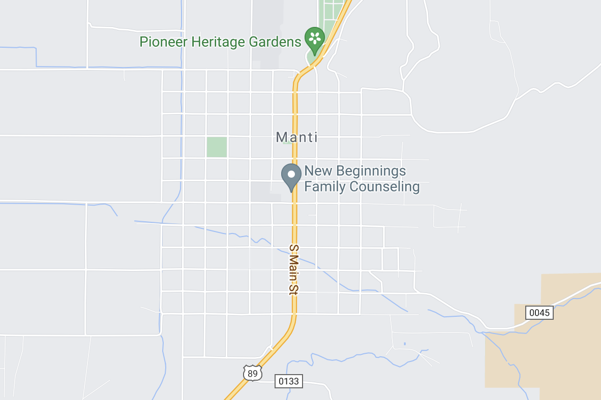

Preston Idaho

Weather Summary
| Currently: | ||
| High: | °F | |
| Wind Chill: | °F | |
| Humidity: | % | |
| Wind Speed: | mph |
5 Day Forecast
Napoleon Dynamite made Preston Idaho a hit
By Andrea Butterfield

Before the movie Napoleon Dynamite, Preston Idaho was just a small town with nothing particularly interesting. It seems to be in the middle of no where, pretty dull. Why would someone want to film a movie in Preston Idaho? There isn't a lot to look at there.
Since it came out, they have a festival about Napoleon Dynamite, which brought more things here other than farming land. It brought many people who love that movie together and to come and see everything there is in Preston Idaho. There are many fields with nothing particularly interesting. Unless you count the potato fields.
How many people still quote that movie? Lines like "Tina, you fat lard, eat your dinner!" "I see you're drinking 1%. Does that mean you think you're fat? Cause you're not. You could be drinking whole if you wanted to." "How much do you want to bet I can throw this football over them mountains?" The crazy lines that are pretty iconic and pretty unforgettable.
WeatherSunshine
123 Main Street
Manti, Utah 84640
Phone Number: 888.888.8888
Email Address: stephanie@weathersunshine.sun


 
